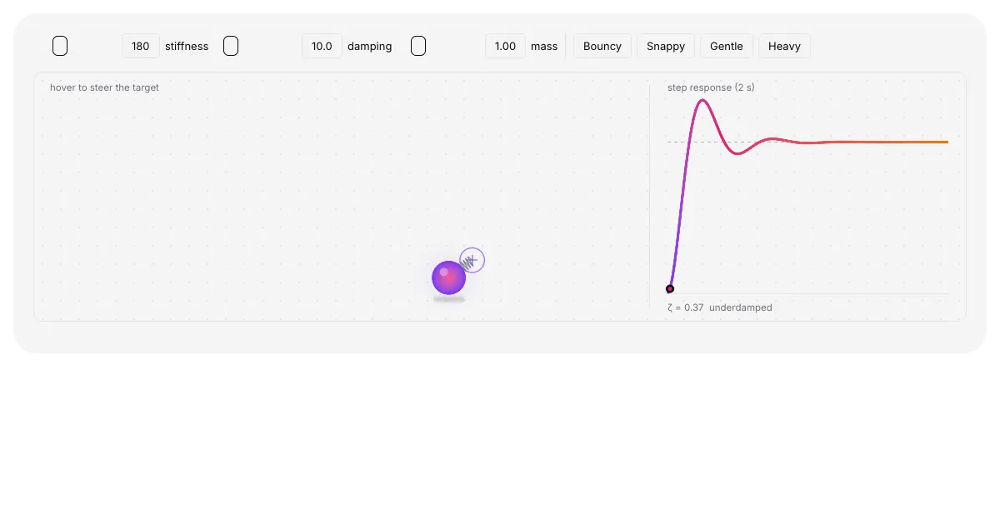
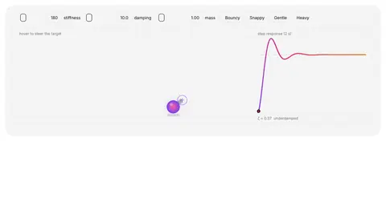
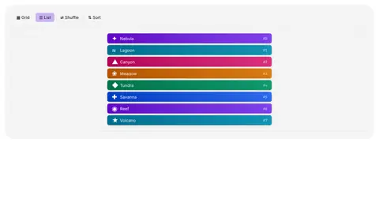
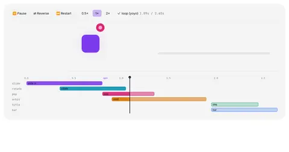

Framer Motion ideas, in Rust
glowkit-motion brings the animation model web developers know from Framer Motion and GSAP to egui: animate any value with a spring, orchestrate children with variants, animate things out before they disappear, and let layouts glide instead of jump.

Why glowkit
animate() and springs
Animate f32, Vec2, Pos2, Rect, Color32 or your own type toward a target with a spring (stiffness, damping, mass) or a tween with one of 31 easing curves.
MotionBox
The motion.div idea: initial props, hover and tap states, and spring transitions on a container whose children stay fully interactive.
Variants and stagger
Switch one variant name and every child follows, staggered from the first or from the center outward, with delays for children.
Presence
The AnimatePresence idea: exit animations for content that is about to disappear, and keyed lists where items enter, exit and the rest slide into place.
Layout and shared elements
FLIP-style layout animation keyed by identity, and shared elements that fly between two places, like layoutId.
Timelines, drag and scroll
GSAP-style timelines with labels and overlaps, drag with momentum, elastic edges and snapping, scroll-linked values, motion paths and shape morphing.
Best components

Spring Playground
Motion EngineTune stiffness, damping and mass and watch a ball spring after the pointer (or a hopping target), with its step response plotted live.
Motion Box
Motion EngineA container like motion.div: enter from initial props, hover and tap states, and spring to new targets. Its children stay fully interactive.
Variants & Stagger
Motion EngineSwitch one variant name and every child follows, staggered one after another (from the first, or from the center outward).
Presence
Motion EngineContent that animates out before it disappears: auto-dismissing toasts and a keyed list where items enter, exit and the rest slide into place.

Layout Animation
Motion EngineItems glide between layouts (grid ↔ list, shuffle) instead of jumping: FLIP-style layout animation keyed by identity.
Shared Element
Motion EngineA thumbnail expands into a detail view and back: the same key used in two places animates between them (layoutId).

Timeline
Motion EngineA GSAP-style timeline: tweens sequenced with relative positions, labels and overlaps; play, pause, reverse, change speed or scrub.
Drag & Snap
Motion EngineThrow a puck around with momentum and elastic edges, snap a knob to stops along an axis, and pull a card that springs home.
Reorder List
Motion EngineDrag rows to reorder them; the others slide out of the way and the dragged row lifts above them.
Scroll-Linked Motion
Motion EngineA progress bar tied to scroll position, parallax layers at different speeds, values mapped with transform(), and cards that animate in when scrolled into view.
Motion Path
Motion EngineObjects travel along a smooth path, turning to follow its tangent, with a comet trail and a staggered convoy.

Shape Morph
Motion EngineOutlines morph smoothly between circle, square, star, heart and blob: resampled, aligned and interpolated point by point.
Springs, hover states and presence
If you have written <motion.div whileHover> or <AnimatePresence>, this will feel familiar.
cargo add glowkit eframeuse glowkit::prelude::*;
use glowkit::motion::{MotionBox, Props, Transition};
MotionBox::new(id)
.initial(Props::new().opacity(0.0).y(30.0).scale(0.9))
.animate(Props::IDENTITY)
.while_hover(Props::new().scale(1.06).y(-6.0))
.while_tap(Props::new().scale(0.94))
.transition(Transition::BOUNCY)
.show(ui, |ui| { ui.button("Still clickable"); });
use glowkit::motion::{Presence, Props, PresenceList};
Presence::new(id, visible)
.initial(Props::new().opacity(0.0).y(-12.0))
.exit(Props::new().opacity(0.0).x(40.0))
.show(ui, |ui| ui.label("Saved!"));
PresenceList::new(id)
.initial(Props::new().opacity(0.0).x(-30.0))
.exit(Props::new().opacity(0.0).scale(0.8))
.show(ui, &items, |item| item.id, |ui, item| { ui.label(&item.name); });From Framer Motion to glowkit
The same concepts, mapped to their glowkit names. Each links to a page with a live demo.
| Framer Motion / GSAP | glowkit | Demo |
|---|---|---|
motion.div with animate / whileHover / whileTap | MotionBox | Motion Box |
useSpring, animate() | animate(ui, id, target, Transition::spring(..)) | Spring Playground |
variants, staggerChildren | MotionGroup + Variants | Variants & Stagger |
AnimatePresence | Presence, PresenceList | Presence |
layout, layoutId | LayoutAnim | Layout Animation |
drag, dragConstraints, dragElastic | Draggable | Drag & Snap |
Reorder.Group | Reorder | Reorder List |
useScroll, useTransform | scroll_offset, transform, InView | Scroll-Linked Motion |
keyframes, repeat, repeatType | Keyframes | Keyframes |
GSAP timeline | Timeline + Tween | Timeline |
Keep exploring
Make your Rust app glow
Open source, MIT or Apache-2.0. One cargo add away.